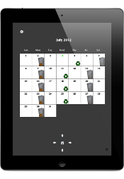

|  Trash Tickler Support |
Included below are some common questions and answers regarding Trash Tickler. Please take a look at these before posting a request to the support account as your question may have already been addressed. Thanks for your support.
Calendar
Q: How do I move around the calendar?
A: Swipe your finger up, down, left or right to move a month or a year at a time. Pinch to return to the current month. You will find arrow and home controls below the calendar also. Tap these to perform the same swipe/pinch functions.
Q: How do I return to the current day when the calendar displays a past or future month?
A: Tap the home button at the bottom of the page or pinch the page.
Q: How do I setup the calendar?
A: There is a gear icon on the calendar page. It's located in the upper left-hand corner. Tap and you'll see the configuration options for services, holidays and reminders.
Q: How do I return to the calendar page from the configuration options page?
A: There is a small calendar icon in the upper left-hand corner of the configuration options page. Tap it to return to the main calendar.
Q: What is the floating red number on the calendar for?
A: The red number is the current day of the month. It only appears in the current month. It will advance as the year progresses, disappear when the calendar is in a future or past month and reappear when you are in the current month.
Q: What are the green numbers on the calendar.
A: Those are the days you have configured as holidays observed by your provider. They are used to adjust your calendar to coincide with the schedule of your provider.
Q: One of my holidays is missing from the calendar.
A: Check if it is configured on the configuration page then check the calendar month to see if it is there. Holiday configuration defaults to the month currently displayed on the calendar. As a result it might be possible to unintentionally create a holiday in the past or future that cannot be seen without displaying the correct calendar month.
If it's on the current day the calendar will show the day as red rather than green.
Reminders
Q: When is a reminder issued?
A: A reminder will appear at approximately 00:00 (based on a 24-hour clock) of the reminder day. You select a reminder type of either "Day before service." or "Day of service.". So, a reminder is issued a few seconds into the date on which the reminder is to be issued. You'll likely be sleeping when the reminder is issued.
Q: What will I see when a reminder is issued?
A: You will see an on-screen reminder, a sound and the Trash Tickler icon on your desktop will be badged with the number 1. Depending on the situation you may also see another message once you open Trash Tickler to take a look at the calendar.
Q: I do not receive a reminder the day before service after I finish configuration.
A: Reminders are generated for dates starting the day after the current day regardless of day before or day after reminder type.
Q: If I move between my device between time zones how are reminders handled?
A: Reminders currently do not account for time zone differences since they are issued at the start of the day and can be configured a day before. This has typically been good enough for most people but let us know if this presents a problem.
Help
Q: Where is the help in the app located?
A: All pages have a small information icon at the bottom right-hand corner of the page. Tap this icon and you'll see the help.
Q: Once the help is displayed for a page how do I clear it?
A: Either tap the help itself or tap the information icon again.
E-mail Support
If you still are having a problem, feel you have found a bug or want to request a new feature let us know and we'll see what can be done. Send your requests to trashticklersupport@hotmail.com and we'll take a look.
Thanks
Thanks for your support.
© 2012 William Howell